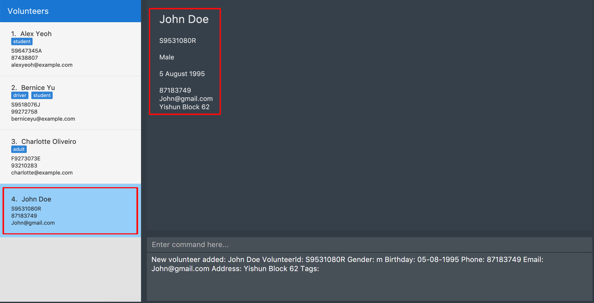
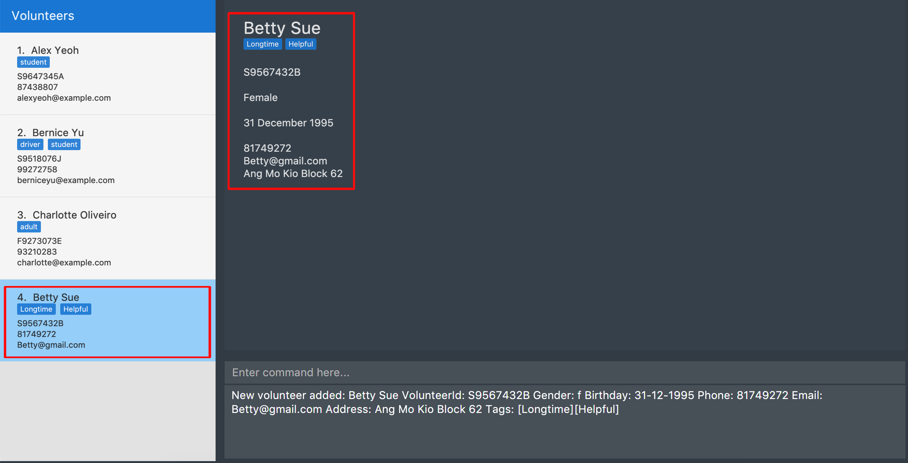

1. Overview
This portfolio records my contributions to the SocialCare project, under the CS2103T Software Engineering module offered by the School of Computing in NUS.
SocialCare empowers volunteer managers to revolutionise the way they manage their resources. With features such as Statistics and Exporting of Certificates with a simple command, the organisational process has never been as effective.
With my role as a Developer for this project, I implemented volunteer management functions, ensuring that the organizational process is simpler yet systematic.
2. Summary of contributions
My contributions to the project mainly focuses on volunteer management.
-
Major enhancement: Added commands to manage volunteers
-
What it does: Allows the user to manage volunteer details with commands such as add, edit and delete.
-
Justification: Streamlines the management of volunteers to fit the volunteer organisation context
-
Highlights: Affects existing commands and commands to be added in future. It required an in-depth analysis of design alternatives. The implementation too was challenging as it required changes to existing commands by implementing additional fields and checks.
-
-
Minor enhancement: Added a Birthday util that exports birth date to a readable format and checks if birth day is before current date.
-
Code contributed: Here is a link to my code on the Project Code Dashboard.
-
Other contributions:
3. Contributions to the User Guide
Given below are sections I contributed to the User Guide. They showcase my ability to write documentation targeting end-users. |
3.1. Volunteer Management
3.1.1. Registering new volunteer: add
Adds a volunteer to the system when in the volunteers context
Format: add n/NAME g/GENDER b/BIRTHDAY p/PHONE_NUMBER e/EMAIL a/ADDRESS [t/TAG]…
Example(s):
The figure above shows how the panel looks like before executing the commands below.
-
`add n/John Doe ic/S9531080R g/m b/05-08-1995 p/87183749 e/John@gmail.com a/Yishun Block 62 `
Adds a volunteer with the following properties:
Property Value Name
John Doe
NRIC
S9531080R
Gender
m (Male)
Birthday
05-08-1995
Phone
87183749
Email
Address
Yishun Block 62
Figure 2. Output ofadd -
add n/Betty Sue ic/S9567432B g/f b/31-12-1995 p/81749272 e/Betty@gmail.com a/Ang Mo Kio Block 62 t/Longtime t/HelpfulAdds a volunteer with the following properties:
Property Value Name
Betty Sue
NRIC
S9567432B
Gender
f (Female)
Birthday
31-12-1995
Phone
81749272
Email
Address
Ang Mo Kio Block 62
Tags
Longtime, Helpful
Figure 3. Output ofadd
3.1.2. Listing all volunteers : list
Lists all volunteers in the system when in the volunteers context.
Format: list
The figure below shows the expected panel after executing the list command.
list3.1.3. Editing volunteers details : edit
Edit details of an existing volunteer in the system when in the volunteers context.
Format: edit VOLUNTEER_INDEX [n/NAME] [g/GENDER] [b/BIRTHDAY] [p/PHONE_NUMBER] [a/ADDRESS] [e/EMAIL] [a/ADDRESS] [t/TAG]…
Example(s):
-
edit 1 n/John Doe
Edits the name of the volunteer at index 1
The figures below show the before and after results of an edit command.
3.1.4. Deleting volunteer details : delete
Deletes details of an existing volunteer in the system when in the volunteer context.
Format: delete VOLUNTEER_INDEX
Example(s):
-
delete 1
Deletes the details of the volunteer specified at index 1
The figures below show the before and after results of a delete command.
4. Contributions to the Developer Guide
Given below are sections I contributed to the Developer Guide. They showcase my ability to write technical documentation and the technical depth of my contributions to the project. |
4.1. Add Volunteer command
The add command in the volunteer context is used to add a volunteer to the application.
Current implementation
This add command requires the AddCommandParser class to parse user input and add a volunteer with the details specified by the user. Currently, the details that are required by the user is Name, VolunteerId (NRIC), Gender, Birthday, Phone, Email and Address.
AddCommandParser implements the Parser class which has the Parser#parse() operation. This operation will throw an error if the user input does not match the command format.
The add command updates the context in ModelManager through addVolunteer.
In addition to adding a volunteer, the add command also does the following:
-
Saves the current database state through
commitAddressBook(for undo/redo functions). -
Raise a
OverviewPanelVolunteerUpdateEventto update the Overview panel for volunteer context.
The figure below shows the sequence diagram for an add command in the volunteer context.
The following code snippet shows the fields that are required by the user when inputting the volunteer details for the add command:
public class AddCommand extends Command {
//...
@Override
public CommandResult execute(Model model, CommandHistory history) throws CommandException {
requireNonNull(model);
if (model.hasVolunteer(toAdd)) {
throw new CommandException(MESSAGE_DUPLICATE_VOLUNTEER);
}
model.addVolunteer(toAdd);
model.commitAddressBook();
EventsCenter.getInstance().post(new OverviewPanelVolunteerUpdateEvent());
return new CommandResult(String.format(MESSAGE_SUCCESS, toAdd));
}
//...
}Design considerations
Aspect: Choice of VolunteerId
-
Alternative 1 (current choice): The use of unique identifier NRIC.
Pros
It is unique to each volunteer, and validates the uniqueness of a volunteer entry.
Cons
It is larger in size than an integer, hence may incur more storage use.
-
Alternative 2: Use of auto-incremented integer VolunteerId.
Pros
It requires less storage, and easier to maintain.
Cons
It may not be a strong indicator of uniqueness.
Aspect: Birthday Display Format
-
Alternative 1 (current choice): Use a BirthdayUtil class to change format of date.
Pros
It requires less storage to store Birthday in original format.
Cons
It requires BirthdayUtil to be invoked every time Birthday is to be displayed to the user.
-
Alternative 2: Immediately store Birthday as preferred user friendly format.
Pros
It does not require BirthdayUtil to be invoked every time the Birthday is to be displayed to the user.
Cons
It is difficult to maintain given that Birthday formats are of different length. Furthermore, requires more storage usage.